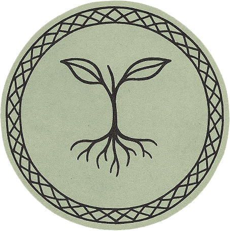

Cuidado de la tierra
Diseñamos sistemas tecnológicos que ayudan a cuidar el agua, la energía, el suelo y los ecosistemas. Buscamos reducir el consumo de recursos, evitar desperdicios y trabajar de acuerdo con las condiciones de cada lugar.